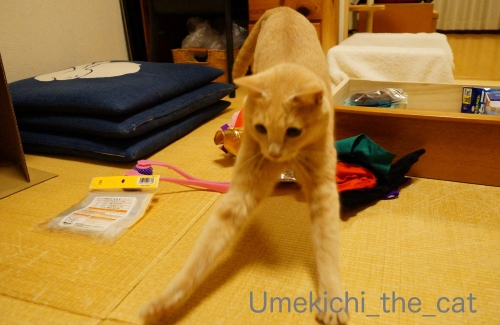
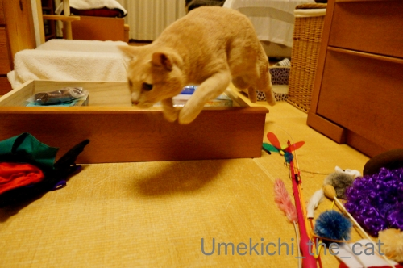
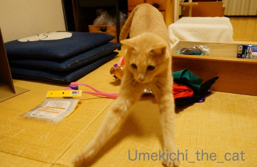
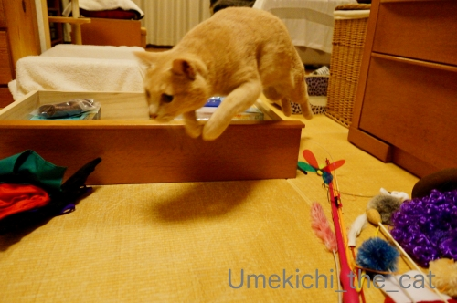

断捨離VSもったいない？ [梅吉]
梅吉のおもちゃと被り物の入っているひきだしの整理をしました（？）

ひきだしを抜いたところに素早く入り込む猫(≧▽≦)

はいはい、その中で見ててくださいね、とお願いしたのに
![[猫]](https://blog.ss-blog.jp/_images_e/101.gif) わし おてつだい せなあかん
わし おてつだい せなあかん

中のものを全部出す・・・積極的にお手伝いです。

捨てようと思っていた色々抜けたり取れたりして情けない姿になっているじゃらしにロックオン！

左からしゅばばばっ！

右からジャーンプ！！

そんなに盛り上がられても困るんですけどー

整理したものを中に戻すこともできませんw
捨てようと思ってたおもちゃことごとくに興奮w猫様あるある。
今回捨てることをお許しいただけたのは
おかーさんのメイク用品から強奪していった小さなパフ一個だけという(⌒-⌒;

近所の神社、すでに謹賀新年です。
なんだか焦るわ〜![[あせあせ（飛び散る汗）]](https://blog.ss-blog.jp/_images_e/162.gif)
 ↑ガブッと一押し↑
↑ガブッと一押し↑
ひきだしを抜いたところに素早く入り込む猫(≧▽≦)
はいはい、その中で見ててくださいね、とお願いしたのに
中のものを全部出す・・・積極的にお手伝いです。
捨てようと思っていた色々抜けたり取れたりして情けない姿になっているじゃらしにロックオン！

左からしゅばばばっ！

右からジャーンプ！！
そんなに盛り上がられても困るんですけどー
整理したものを中に戻すこともできませんw
捨てようと思ってたおもちゃことごとくに興奮w猫様あるある。
今回捨てることをお許しいただけたのは
おかーさんのメイク用品から強奪していった小さなパフ一個だけという(⌒-⌒;
近所の神社、すでに謹賀新年です。
なんだか焦るわ〜

カフェオレ色の梅吉

梅吉 2023年8月10日 永眠


梅吉と出会った譲渡会

犬猫の理由なき殺処分ゼロ
妄想広告
UMEKICHI 光

爆発的に早い！
時々攻撃的！
Thanks to Mr.Boss365
爆発的に早い！
時々攻撃的！
Thanks to Mr.Boss365

猫様のお気に入りは捨てられませんね＾＾
by ぽちの輔 (2019-12-19 06:29)
梅吉さん、チェック入念ですね。
by ニコニコファイト (2019-12-19 07:17)
そうなんですよねぇ・・・
壊れたおもちゃや情けない姿になった
おもちゃを捨てようとすると、
とても楽しそうに遊んでくれて、結局はまたおもちゃ箱に
戻すという虚しい時間を過ごすというお猫様アルアルですね(⌒-⌒; )
by ニッキー (2019-12-19 08:07)
これでは永久におもちゃの整理できそうにないのね(^｡^)
すみよっさん、もう準備万端(@_@)！
by よーちゃん (2019-12-19 08:41)
我が家にも飽きられたおもちゃが![[新月]](https://blog.ss-blog.jp/_images_e/95.gif)
![[新月]](https://blog.ss-blog.jp/_images_e/95.gif)
![[新月]](https://blog.ss-blog.jp/_images_e/95.gif)
でもしばらく片付けておくと
また燃え上がるという(^_^;)
なかなか捨てられません?笑
by きぃ (2019-12-19 08:52)
オモチャの断捨離は中々出来そうにないですね！
神社の準備は早すぎるような？
by ma2ma2 (2019-12-19 09:11)
うまいことハマってますね！
整理された引き出しにきちんと座る梅吉さんのドヤ顔がステキ♡
by liang (2019-12-19 09:46)
いつもにも増して素晴らしいお写真の数々です。
引き出しからうにっ! と出てくるとこも、手がながーくなったとこも、飛んでるところも凄いです。
我が家のお片づけは、今年はすでに諦めモードでございます。
by zombiekong (2019-12-19 12:05)
梅吉さん、手が長～い(#^^#)
引き出しから全部オモチャを出すお手伝い、偉いね～^^;
できたスペースにちんまり納まって可愛いこと♪
「断捨離」という名の「梅吉さん撮影会」だったということで、楽しませていただきました！^^
ウチのも忘れた頃に遊びだしたりするのでホントオモチャを捨てられず増殖する一方。押し入れをかなり占領されています。
それでも新しいの見つけたら買っちゃうんですよね～。←猫大バカ親
え～？もう謹賀新年？？ 年賀状急がなきゃ・・・。
by ゆきち (2019-12-19 12:18)
こんにちは。
梅吉くん、流石の侵入です。小生猫には無理なサイズ！！
軽快で楽しそうですね。お手伝い兼お遊びは必須です（笑）
↑撮影会と思えばお得な感じです！！
おもちゃ、大きいものでなければ、整理しにのもありかな？梅吉くんの為です。
「なんだか焦るわ〜」同感です。
プライベートを犠牲にして踏ん張っている感じです！？(=^･ｪ･^=)
by Boss365 (2019-12-19 12:47)
梅さん、梅さんお手手が長いのね♪ですね。
↑ 同じくタルちゃんはその引き出しを抜いた隙間には
入れないサイズでしょう。
引き出しの中のおもちゃを全部外に出すお手伝いよくできました(^^
羽や触角がもげようがそのじゃらしの楽しさを覚えているのか？
久々に出しても興奮するおもちゃありますね。
神社の飾りを見て焦る気持ちも納得。
今週土曜に配管清掃がくるｗ 洗濯機の排水ホースの穴も
掃除してもらいたい場合は洗濯機をよけるのだろうかと悩み中です。
by marimo (2019-12-19 13:16)
人間のものは
迷わずにぽいぽい出来るんだけど
猫に関するものはダメダメ〜〜〜〜
もったいなくてぽいぽい出来ませんっ
おもちゃも、今は使わないけど
またブームがくるかもしれないし・・・なんて思って
なげられないのよねえｗｗ
by リュカ (2019-12-19 16:01)
うきき・・・梅吉っちゃんのお手伝いで捗りますわねえ（笑）
by じゅらまろ (2019-12-19 17:26)
引き出しの抜いた中に入っちゃって！
そして中のものを全部出す！
中に入り込んでしまえない！
もうーーー、なんてかわいいの！
困っちゃうけどかわいいのよねーー。
それにしても梅吉さんの引き出しがあるとは。
それもいろいろ入っていそう。
by ChatBleu (2019-12-19 18:41)
梅吉さんのテンションがMAXですね。
楽しそうに走り回ってますね。
太鼓橋、このように見えるのだと再確認です。
後10日余で新年ですね。
光陰矢の如し。
ホント早いです。
引越しをして、ちょうど１ヶ月、
廊下のクロゼットを毎日のように、
レイアウトを（使いやすく、生活しやすいように）変えてます。
家の中のものですが、私しか利用しません。
大きな棚板を移動させるのが大変。
でも、こういう時が至福の時です。
後、何回変更するかなぁ。
by kiki (2019-12-19 19:47)
1枚目のお耳の角度！！！かわいい〜(*^^*)
by も〜 (2019-12-19 21:36)
おお。これはひょっとして梅吉さんの大好きな、高さ7.5cmの空間？！^^;
それにしてもお手手長いですねー。
by yes_hama (2019-12-19 22:09)
出すのは得意だけど仕舞うのは苦手なんだニャ（ﾟ□ﾟ）
by 英ちゃん (2019-12-19 23:47)
空いた空間に入る、猫あるあるですよねぇ。
なんでそんなに小さな隙間に入れるのかって
びっくりするぐらい、そしてほんの一瞬で
スルリと入られます。中身のワタが全部
出ちゃったボロボロのぬいぐるみも毎日
遊んでいるので捨てられません。
by mio (2019-12-19 23:57)
狭いところにピッタリ入る梅吉さん、可愛い～！
出てくるところもお手伝いっぷりの盛り上がりもなんて素敵！
長いお手々でシュバババっとぉ～
捨てようとすると急に遊びだす、あるあるですね＾＾
by sana (2019-12-20 01:17)
おもちゃいっぱいで梅吉さん大興奮！？
これは片付けどころの騒ぎではありませんね。
そして捨てることを許されないおもちゃたち(笑)
by yamatonosuke (2019-12-20 01:27)
こうやって物がたまっていくんですよね(^_^;)
梅吉さんのロックオン、ナイスショットです！
昨日は忘年会でしたが、「来年もよろしく・・・」と乾杯の挨拶がありました。もう年の瀬なんだな～と実感です。
by kou (2019-12-20 07:35)
これはねこあるあるですよねーｗｗ
DNAに刷り込まれているとしか思えません(≧ω≦)
うちなんて引き出しを開けたとたんジャンプして
INしてくるので、引き出しが壊れるーーと思います。
コスプレ品がありすぎてどう整理していいのやら＾＾
ご近所の神社、このアングルでどこだかばっちり分かります！
新年ちょっと過ぎた頃にお参りしようかと...(*´艸｀*)
その前に年賀状ーー(笑)
by カトリーヌ (2019-12-20 17:13)
おもちゃにロックオンの梅吉くん。
ず～っとないと思ってたにゃ。やっと見つけたにゃ！！
それとも新しいおもちゃの気分なのかな？
この姿を見たら捨てられないよ～。
こんなうれしそうな姿を見れなくなっちゃうことがもったいない(≧▽≦)
家もタラがTV台の中で平べったくなってる率多しですｗ
スピーカーとか後ろに押しやってまで入ってるの。
by emi (2019-12-20 18:36)
そうなんですね
僕のところはまだ家族になってから日が浅いので
どのおもちゃも現役なんですが
捨てようと思ったら遊んじゃうんですか
来年の今頃は、「捨てようとおもったのに～」って
僕も言ってるかもしれませんね
by 藤並 香衣 (2019-12-21 00:33)
ひゃあ、梅吉さんがぺっちゃんこっ(@@;)
その隙間、ウチの子たち、入るかなぁ??? 頭打ちそう･･･
思い出したように遊ぶ。。そうね、もったいない精神ね(^^ゞ
by のらん (2019-12-21 12:10)
すばらしいジャンプの瞬間のお写真！
出すもののお手伝いはしたものの
捨てる許可はおりず…^m^
by ふにゃいの (2019-12-21 15:12)
梅吉君可愛い！と思っていたら、結構ご近所な雰囲気です。車で30分くらいかな？
by プリスキラ (2019-12-21 20:48)
こんにちは。
「父が交通局の職員」は失礼しました（爆）
お陰で、小生は真っ当な大人になりました！？(=^･ｪ･^=)
by Boss365 (2019-12-22 15:35)